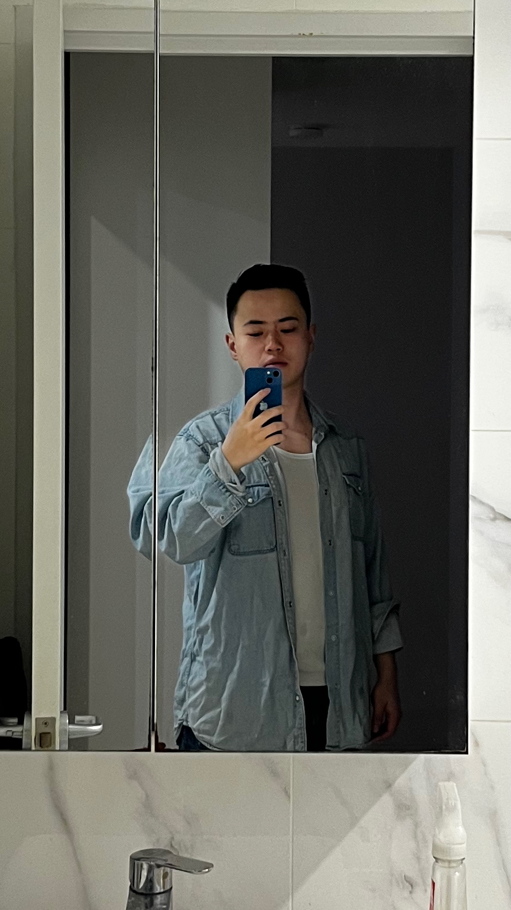

Researcher in Software Engineering
Zijian Luo aka Jack
MPhil graduate from The University of Sydney, soon joining Monash University.
I recently completed my MPhil in Computer Science at The University of Sydney, specializing in Automated Program Input Repair and Fuzzing. I am preparing to continue my research at Monash University, focusing on Code Intelligence, Agents, and Code Verification. I have also worked on code migration at MSRA and supply-chain reliability at Oracle Labs.

Education
Doctor of Philosophy (PhD) in Computer Science
UpcomingMaster of Philosophy (MPhil) in Computer Science
Mar 2024 – Mar 2026Bachelor of Engineering (B.Eng.) in Software Engineering
Sep 2018 – Jun 2022Work Experience
Research Intern
Mar 2026 – Present- Enhanced Copilot's cross-platform code migration capability by integrating a knowledge graph to model platform-specific APIs, dependencies, and migration mappings.
- Built a benchmark suite to evaluate Copilot on long-horizon software engineering tasks, measuring end-to-end planning and execution across multi-step workflows.
Research Assistant
May 2025 – Oct 2025- Conducted research on software supply-chain reliability by integrating LLMs with the Macaron framework, reproducing build artifacts for over 120 open-source repositories from Libraries.io with an 80% success rate.
- Designed LLM-assisted workflows for defect reproduction and static-analysis validation.
Publications
Automatic Data Repair without Format Specifications
IEEE International Symposium on Software Reliability Engineering (ISSRE) 2025.
Assessing Reliability of Statistical Maximum Coverage Estimators in Fuzzing
IEEE International Conference on Software Maintenance and Evolution (ICSME) 2025.
Maximal Format-Free Record Repair
Under Blinded Review.
A black-box repair framework that infers intrinsic program input structure using regular-language and automata learning, enabling correction without format specifications.
Projects
The Deeplang Programming Language (82 Stars)
A memory-safe, multi-paradigm programming language for embedded systems. I was responsible for implementing the backend virtual machine, including interpreting and executing WebAssembly (WASM) code generated by the frontend.